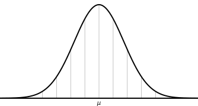
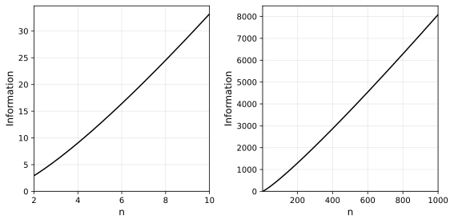
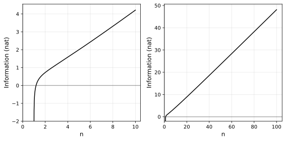

Arithmetic codes are pretty useful for compression.
Implementations usually operate using the equivalent of a categorical distribution. For example, using a 26 letter alphabet with probabilities proportional to their frequency in English text:

Each letter gets an explicitly probability assignment and an equivalent section of the unit interval like so:
This unit interval is then used as a CDF (cumulative distribution function) by the arithmetic encoder to turn sequences of symbols (here: letters) into binary codes of minimal size.
But any probability distribution with a well defined quantile function (the inverse of the CDF) can be used for arithmetic coding, even on infinite domains. Consider a Gaussian prior over integers to compress sequences of whole numbers:

For each integer \(i \in \mathbb{Z}\), we assign the probability mass contained within the interval \(i \pm 0.5\) on the Gaussian PDF (the probability density function) of choice.
An Abstract Arithmetic Coding Interface
To support this exploration, we implement a generic arithmetic codec (encoder/decoder) that interfaces with distributions to serialize and de-serialize values and provide both categorical and Gaussian implementations.
The program is written in Rust:
For probability distributions that can be queried at any fraction of
their remaining probability mass (quantile) and truncated at those
fractions (truncate), the algorithm can produce binary serializations
of any value (indexed in i64) of their domain.
type Index = i64;
pub trait TruncatedDistribution {
fn quantile(&self, cp: f64) -> (Index, f64); // returns (s, s_rem)
fn truncate(&mut self, cp: f64, s: Index, s_rem: f64, bit: bool);
fn lo(&self) -> Index; // symbol the lower-bound is in
fn hi(&self) -> Index; // symbol the upper-bound is in
fn is_resolved(&self) -> bool { self.lo() == self.hi() }
}To serialize sequences of values, a trait for a “model” is defined that emits distributions which are truncated until resolution whereby the resulting symbol is fed back to the model (updating it) before requesting the next distribution.
pub trait Model<T> {
fn next_distr(&mut self) -> Box<dyn UnivariateDistribution>;
fn push(&mut self, s: Index) -> Option<T>;
}pub trait UnivariateDistribution {
fn truncated(&self) -> Box<dyn TruncatedDistribution>;
}De-serialization (decoding) uses the same interface with the same order of mutating calls such that deterministic implementations of those methods result in reversible (decodable) encodings.
The rest of this post is divided into three parts: 1) we derive bounds on the efficiency of modeling integers with Gaussian PDFs to justify the approach, 2) comments on implementation details of the Gaussian backend, and 3) a few examples proving the implementation works as designed.
Theoretical Viability
The code length achievable by an arithmetic encoder is within two bits of the information content of the encoded message, which is the sum of the information content of its constituent symbols, which is related to their probability:
\[I(x) = -\log P(x)\]
The probability we assign each integer (our symbols) is the probability mass within an interval \(x \pm 0.5\) of the Gaussian PDF. This is computed as
\[\begin{align}P(x) &= CDF(x)|_{x-0.5}^{x+0.5}\\[6pt] &= CDF(x+0.5) - CDF(x-0.5)\end{align}\]
in terms of the CDF (the cumulative distribution function) of the Gaussian which, for the parametrized distribution \(\mathcal{N}(\mu,\sigma^2)\) is equal to:
\[CDF(x) = \frac {1}{2}\left[1+\operatorname {erf} \left({\frac {x-\mu }{\sigma {\sqrt {2}}}}\right)\right]\]
which is expressed in terms of a non-elementary, sigmoid-shaped, error function “erf” which doesn’t factor or reduce well enough to be useful for us going further.
PDF as a Estimator for Probability
Conveniently, the PDF already approximates the \(CDF(x)|_{x-0.5}^{x+0.5}\) based on the fact that:
\[PDF(x) = \lim_{h\to 0} \frac{CDF(x)|_{x-h/2}^{x+h/2}}{h}\]
which is just a statement of the fundamental theorem of calculus, by the fact that the CDF is the integral of the PDF. Practically speaking, this means the PDF is a good approximation of the interval-CDF when the width of the interval is small or, equivalently (since our intervals are all equal to 1), when the variance is large.
For \(\sigma = 1\), the difference is already forgivable:

As the variance approaches 0, our probability function flattens relative to the PDF (here \(\sigma \in \{ 0.8^i\) | \(i \in \{0,1,2,...\} \}\), and both axes are scaled to keep the PDF at the same place):
with sigmoid-shaped steps, where the \(\pm 0.5\) interval crosses into and out of the actual PDF:

meaning that when \(\sigma \geq 1\), the PDF is a good estimator for \(CDF(x)|_{x-0.5}^{x+0.5}\) and when \(\sigma < 1\), it underestimates the probability in the tails (even beyond the sigmoid steps). In either case I argue it works as a good “worst-case”.
This is convenient because the formula of the PDF doesn’t contain special functions:
\[PDF(x) = \frac{1}{\sqrt{2\pi \sigma^2}} \;\exp\!\left(-\frac{(x-\mu)^2}{2\sigma^2}\right)\]
We use the PDF to set bounds on the information content of different data sets w.r.t. their MLE (maximum likelihood estimator), i.e. the Gaussian with mean and variance equal to the mean and variance of the data.
Re-parametrization of Gaussian MLE’s
The Gaussian MLE of a set of \(n\) values \(\{x_0, x_1, ..., x_{n-1}\}\) has parameters:
\[\mu = \frac{\sum x}{n} ~~~~~~~~~~~~ \sigma^2 = \frac{\sum (x - \mu)^2}{n}\]
Another formulation of variance (which is also the more numerically stable) is:
\[\sigma^2 = \frac{\sum x^2}{n} - \frac{(\sum x)^2}{n^2}\]
or more succinctly:
\[\mu = \frac{s_1}{s_0} ~~~~~~~~~~~~ \sigma^2 = \frac{s_2}{s_0} - \frac{s_1\!^2}{s_0\!^2}\]
where:
\[s_i = \sum{x^i} ~~~~~~~~~~~~ i \in \{0,1,2\}\]
Information of Data Sets
The only location of low probability (long codes) on the Gaussian PDF is the tails and there are only a few ways to “distribute” data such that the extreme values fall at different point in the tails.
Notably, we have sets where all data is the same value. The resulting Gaussian is technically degenerate (\(\sigma^2 = 0\)), but the resulting probability around the unit interval at that point will be 1 (code length 0) which should not be a problem in terms of compression efficiency if the implementation handles it properly.
Other axes of data “distribution” are 1) how spread out and 2) how skewed to one side the values are. We model these by instantiating data sets without loss of generality and observe their effects on the resulting arithmetic codes.
Multimodal
Moving forward from the case of the degenerate Gaussian of a distribution containing only 1 value, we model the parameters of Gaussian distributions equally distributed between 2, 3, 4, etc. equidistant modes:
\[\renewcommand{\arraystretch}{1.5} \begin{array}{l|c|c|c} \text{Data} & s_0 & s_1 & s_2 \\ \hline \{0,1\} & 2 & 1 & 1 \\ \{0,1,2\} & 3 & 3 & 5 \\ \{0,1,2,3\} & 4 & 6 & 14 \\ \{0,1,2,\ldots,n\} & n+1 & \dfrac{n(n+1)}{2} & \dfrac{n(n+1)(2n+1)}{6} \end{array}\]
We get parameters:
\[\begin{align} \mu &= \frac{s_1}{s_0} = \frac{n(n+1)}{2(n+1)} = \frac{n}{2} \end{align}\]
and
\[\begin{align} \sigma^2 &~=~ \frac{s_2}{s_0} - \frac{(s_1)^2}{(s_0)^2}\\ &~=~ \frac{n(n+1)(2n+1)}{6(n+1)} - \frac{n^2(n+1)^2}{4(n+1)^2}\\ &~=~ \frac{n(2n+1)}{6} - \frac{n^2}{4}\\ &~=~ \frac{2n(2n+1) - 3n^2}{12}\\ &~=~ \frac{4n^2 + 2n - 3n^2}{12}\\ &~=~ \frac{n^2 + 2n}{12} \end{align}\]
which flattens out with increasing \(n\) e.g. \(n \in \{1,2,...,12\}\):

In general, we get the class of PDFs:
\[\begin{aligned} PDF(n,x)_{multimodal} &= \frac{1}{\sqrt{2\pi \cdot \frac{n(n+2)}{12}}} \;\exp\!\left(-\frac{\left(x-\frac{n}{2}\right)^2}{2 \cdot \frac{n(n+2)}{12}}\right)\\ &= \frac{1}{\sqrt{\pi \cdot \frac{n(n+2)}{6}}} \;\exp\!\left(-\frac{\left(x-\frac{n}{2}\right)^2}{\frac{n(n+2)}{6}}\right)\\ &= \sqrt{\frac{6}{\pi\,n(n+2)}} \;\exp\!\left(-\frac{6\left(x-\frac{n}{2}\right)^2}{n(n+2)}\right)\\ \end{aligned}\]
As \(n\) increases, the probability densities at each of the data points \(\{0,1,...,n\}\) converge. This means that, at worst, we get an information content equal to that of \(x=0\):
\[\begin{aligned} I(n)_{multimodal} &= -n\log(PDF(n,0)_{multimodal})\\ &= -n\log\left(\sqrt{\frac{6}{\pi\,n(n+2)}} \; \exp\!\left(-\frac{6\left(0-\frac{n}{2}\right)^2}{n(n+2)}\right)\right)\\ &= -n\log\left(\sqrt{\frac{6}{\pi\,n(n+2)}} \; \exp\!\left(-\frac{3n}{2(n+2)}\right)\right)\\ &= -\frac{n}{2}\log\left(\frac{6}{\pi\,n(n+2)}\right) + \frac{3n^2}{2(n+2)}\\ &= \frac{n}{2}\log\left(\frac{\pi\,n(n+2)}{6}\right) + \frac{3n^2}{2(n+2)}\\ \end{aligned}\]
which is \(O(n\log n)\):

This is within expectations. Dividing by \(n\), we get code lengths of \(O(\log n)\) per integer, which is no more than the complexity of distinguishing one among a set of \(n\), which is, informationally speaking, needed as the Gaussian prior spreads to cover \(O(n)\) values.
Outlier case
For a more degenerate case, consider the probability density at an outlier by setting the majority on one value (e.g. 0) and a single outlier at another (e.g. 1).
\[\begin{array}{l|c|c|c} \text{Data} & s_0 & s_1 & s_2 \\ \hline \{0,1\} & 2 & 1 & 1 \\ \{0,0,1\} & 3 & 1 & 1 \\ \{0,0,0,1\} & 4 & 1 & 1 \\ \{0,0,...,0,1\} & n & 1 & 1 \\ \end{array}\]
In general, we get parameters:
\[\mu = \frac{s_1}{s_0} = \frac{1}{n}\]
\[\sigma^2 ~=~ \frac{s_2}{s_0} - \frac{(s_1)^2}{(s_0)^2} ~=~ \frac{1}{n} - \frac{1}{n^2} ~=~ \frac{n-1}{n^2}\]
The PDF becomes
\[\begin{align} PDF(n,x)_{outlier} &= \frac{1}{\sqrt{2\pi \cdot\frac{n-1}{n^2}}} \exp\!\left(-\frac{\left(x-\frac{1}{n}\right)^2}{2\cdot \frac{n-1}{n^2}}\right)\\ &= \frac{n}{\sqrt{2\pi(n-1)}} \exp\!\left(-\frac{n^2\left(x-\frac{1}{n}\right)^2}{2(n-1)}\right) \end{align}\]
For the informational content of a data set of size \(n\), we have \((n-1)\) times \(P(0)\) and \(P(1)\) once. As \(n\) approaches infinity, the density at \(x=0\) rises above 1, to infinity (which would produce negative information).
Bounding the probability of non-outliers at \(1\), they contribute an information content of \(0\). The whole of the information content then comes from the shrinking probability of the outlier:
\[\begin{align} I(n)_{outlier} &= -\log(PDF(n,1)_{outlier})\\ &= -\log\left(\frac{n}{\sqrt{2\pi(n-1)}} \exp\left(-\frac{n-1}{2}\right)\right)\\ &= -\log(n) + \log(\sqrt{2\pi(n-1)}) - \log\left(\exp\left(-\frac{n-1}{2}\right)\right)\\ &= -\log(n) + \frac{1}{2}\log(2\pi(n-1)) + \frac{n-1}{2}\\ &= \frac{n-1}{2} + \frac{1}{2}\log(2\pi(n-1)) - \log(n) \end{align}\]
which is \(O(n)\):

We can confirm this trend by computing the information using the real assigned probabilities with \(CDF(x)|_{x-0.5}^{x+0.5}\) for the first few cases:

with a slope of at little under \(2\) bits per number once the line settles around \(n \sim 20\). This is subjectively good behavior under so-called “worst” conditions.
Implementation
The implementation of the arithmetic codec algorithm is relatively straightforward using the abstract interface we defined, making sure operations between encoding and decoding functions are symmetric.
The less trivial parts of the program are implementation of methods
quantile and truncate for the trait:
type Index = i64;
pub trait TruncatedDistribution {
fn quantile(&self, cp: f64) -> (Index, f64); // returns (s, s_rem)
fn truncate(&mut self, cp: f64, s: Index, s_rem: f64, bit: bool);
fn lo(&self) -> Index; // symbol the lower-bound is in
fn hi(&self) -> Index; // symbol the upper-bound is in
fn is_resolved(&self) -> bool { self.lo() == self.hi() }
}What’s important here is that the quantile function maps onto the
symbol space in amounts commensurate with the given cumulative
probability \(\in [0,1]\). Inaccuracy in this regard is not prohibitive
for serialization, but will result in longer codes than necessary
(assuming models are well fit to the data).
It is assumed, however, that while a truncated distribution is not yet
resolved, quantile(0.5) returns an index-remainder pair that is
different than either quantile(0.0) (the lower-bound) or
quantile(1.0) (the upper-bound), or the program will loop
forever. This property can be called progress.
Gaussian Implementation
The quantile function for Gaussians is continuous, one-to-one, monotone and has finite value everywhere except at \(0 \mapsto -\infty\) and \(1 \mapsto \infty\).

Using this function to measure probability masses far in the tails (past \(6\sigma\)) is not possible as the cumulative probabilities approaching 0.99999… overflow to 1.0.
An easy fix to ensure progress might be to fall back to linear interpolation whenever the call to the quantile function runs out of precision, assuming local linearity.
While this is a reasonable approximation in the central bulk of the distribution, it fails in the tails. To see why, consider the PDF and its derivative:

While both flatten out at the tails, for any given interval in the tails, the relative difference becomes greater the further away you move from the center. To see this, normalize the (absolute) derivative to the value of the function:
That is, the tails may be flat in absolute terms, but they become steeper relative to themselves the further away you go. Another way to demonstrate this is by blowing up the PDF at different scales (here, successive factors of 10):
We are forced to find an analytic or at least numeric solution that is more faithful to the distribution.
Tackling Numerical Instability
Like is usually the case with precision issues in probability, the solution to numerical instability is found in the log-domain. This gives us two analogous functions for the cumulative probability with more manageable shapes:

Furthermore, we can model all right tail calculations by using the left’s and avoid all asymptotes by exploiting the symmetry of the Gaussian PDF. This leaves us with two almost linear curves.
Fortunately, SciPy has well documented and precise polynomial
approximations of the log-CDF
log_ndtr
(source)
and quantile-exp
ndtri_exp
(source). This
affords us the precise interpolations on the probability mass of the
Gaussian we require, at least for now.
Verification
For the examples below, information content is calculated as the sum of the \(\log_2\)-probabilities of each integer in the distribution. The expected code length is that value rounded up. Code length is the empirical result. All codes successfully decode back to the encoded values.
Degenerate Case
Integer sets with a single value produce empty codes:
Set: [0]
Model: Gaussian { μ: 0, σ: 0 } (1, 0, 0)
Information Content: 0 bits
Expected code length: 0 bits
Code: ''
Code length: 0 bits
Analysis: +0 bits (+0.0%) compared to expected
Decoding successful
Set: [1]
Model: Gaussian { μ: 1, σ: 0 } (1, 1, 1)
Information Content: 0 bits
Expected code length: 0 bits
Code: ''
Code length: 0 bits
Analysis: +0 bits (+0.0%) compared to expected
Decoding successful
Set: [8, 8, 8, 8, 8, 8, 8, 8, 8, 8, 8, 8]
Model: Gaussian { μ: 8, σ: 0 } (12, 96, 768)
Information Content: 0 bits
Expected code length: 0 bits
Code: ''
Code length: 0 bits
Analysis: +0 bits (+0.0%) compared to expected
Decoding successfulSmall Sets
Small symmetric sets produce consistently optimal codes:
Set: [-1, 1]
Model: Gaussian { μ: 0, σ: 1 } (2, 0, 2)
Information Content: 4.0970591008090445 bits
Expected code length: 5 bits
Information Contributions (bits): [2.05, 2.05]
Code: '01010'
Code length: 5 bits
Analysis: +0 bits (+0.0%) compared to expected
Decoding successful
Set: [-1234, 1234]
Model: Gaussian { μ: 0, σ: 1234 } (2, 0, 3045512)
Information Content: 24.632444528661186 bits
Expected code length: 25 bits
Information Contributions (bits): [12.32, 12.32]
Code: '0010100010100110000100000'
Code length: 25 bits
Analysis: +0 bits (+0.0%) compared to expected
Decoding successful
Set: [1, 0, -1]
Model: Gaussian { μ: 0, σ: 0.816496580927726 } (3, 0, 2)
Information Content: 5.274689097597744 bits
Expected code length: 6 bits
Information Contributions (bits): [2.08, 1.12, 2.08]
Code: '111000'
Code length: 6 bits
Analysis: +0 bits (+0.0%) compared to expected
Decoding successfulOutlier Case
Outlier cases like this one (\(n = 10\)):
Set: [0, 0, 0, 0, 0, 0, 0, 0, 0, 1]
Model: Gaussian { μ: 0.1, σ: 0.3 } (10, 1, 1)
Information Content: 5.0256952907839185 bits
Expected code length: 6 bits
Information Contributions (bits): [0.17, 0.17, 0.17, 0.17, 0.17, 0.17, 0.17, 0.17, 0.17, 3.45]
Code: '1001110'
Code length: 7 bits
Analysis: +1 bits (+16.7%) compared to expected
Decoding successfulare generated between \(n = 1\) and \(n = 100\), reproducing the plot from an earlier section:

which is not optimal everywhere, but good enough.
Random Samples
The error becomes less noticeable as we move to sets containing more information. Here we sample \(n\) random elements from a uniform distribution between -5 and 5, once for each \(n\):

Seemingly identical performance is obtained when sampling from a normal distribution with the same variance \((\sigma^2 = \frac{10^2}{12} = 8.\overline{3})\):

Sampling from any wider distribution produces code lengths closer to the information content than is visually distinguishable.